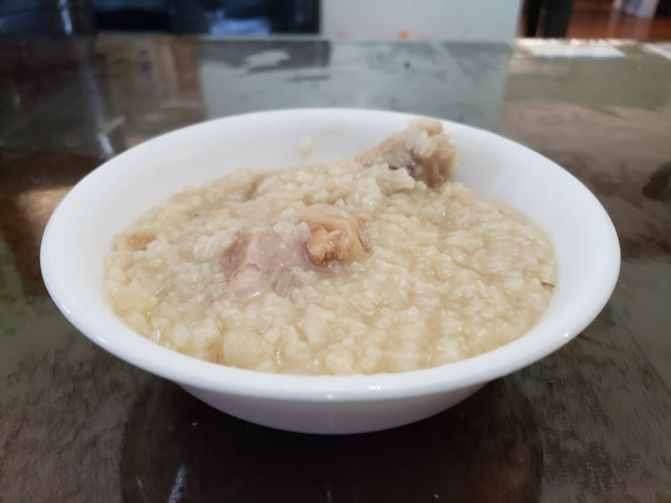

Arroz Caldo

Ingredients:
Arroz Caldo:
- 2 1/2 lb Chicken thighs or legs, bone-in, skin-on
- 2 tbsp Olive oil
- 1 Onion, diced
- 2 cloves Garlic, minced
- 2 inches Ginger, thinly sliced
- 1 tbsp Fish sauce
- 4 cups Chicken broth
- 1 1/4 cup Water
- 1 cup Uncooked jasmine rice, washed
- 1/2 - 1 Calamansi or Lemon, juiced
- 1 tsp Fish sauce
- Salt, to taste
- Black pepper, to taste
Optional Toppings:
- 1 Scallion, finely chopped
- 1/4 cup Fried garlic
- 3 eggs, hard-boiled
- 1 tbsp Safflower
Instructions:
- Heat the olive oil in a large pot over medium heat. Sauté the onion, garlic, and ginger in the hot oil until fragrant and the onions are translucent, about 5 minutes.
- Add in the chicken. Cook and stir together for 2-5 minutes. Stir the tablespoon fish sauce into the pot, cover, and cook another 2-3 minutes.
- Pour the chicken broth and water into the pot. Add the rice and stir. Bring the mixture to a boil and reduce to a simmer over low/medium-low. Cover and cook for 45 minutes, stirring occasionally to assure the rice is not sticking to the bottom of the pot.
- Mix in the calamansi/lemon and teaspoon fish sauce and season with salt and pepper.
- Optionally, mix in safflower for color and flavor. Garnish with scallions, hard-boiled eggs, and fried garlic.